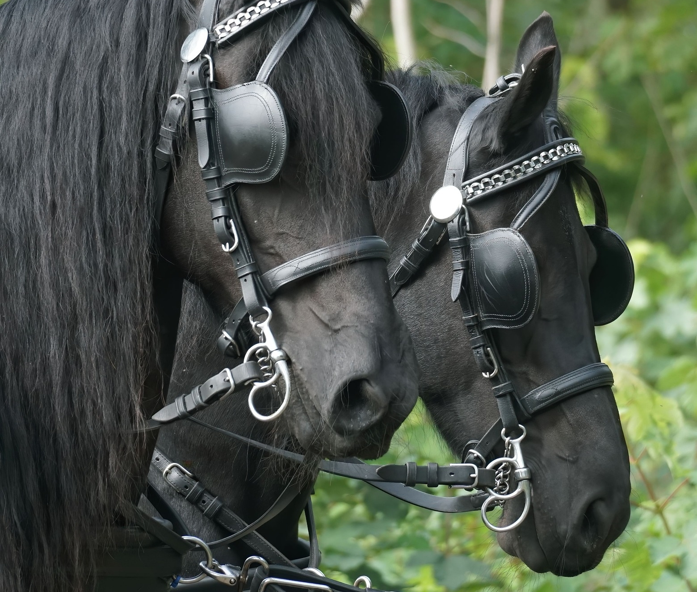
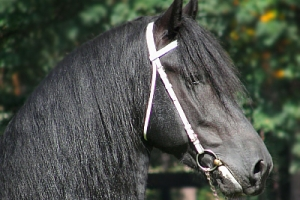
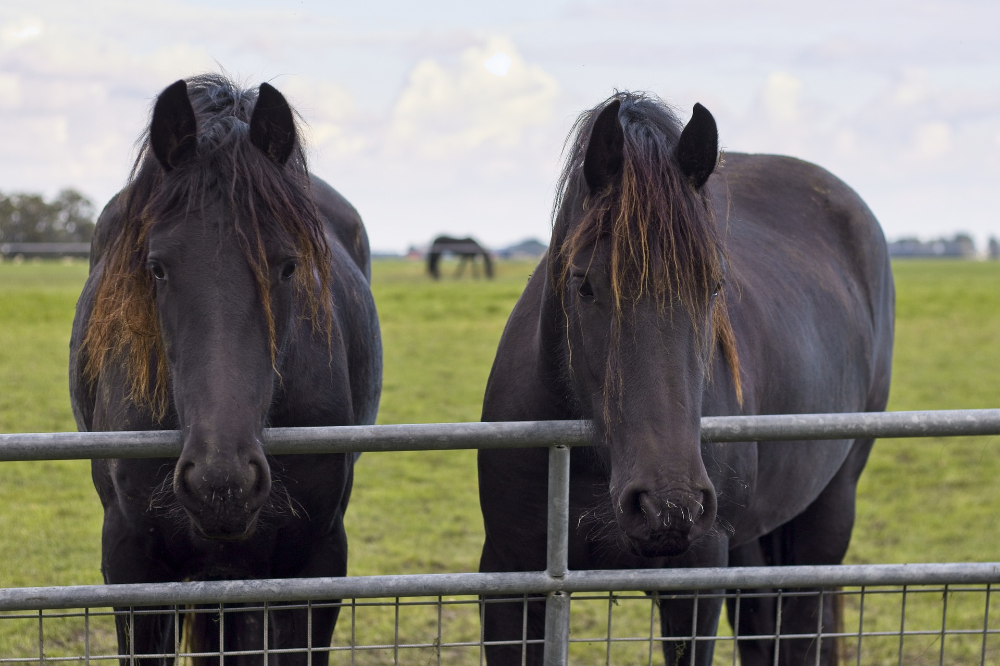
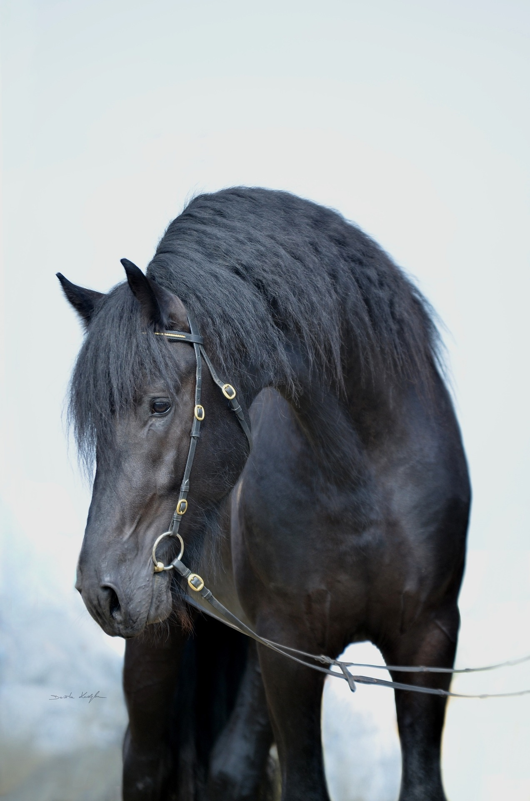
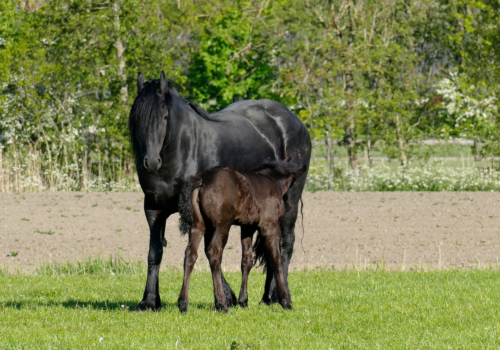

A Fríz ló története

A mai fríz őseit az elsők között háziasították Európában. A II. században, a Hadrianus római császár idején szolgáló fríz katonákkal már ezek a lovak is részt vettek a nagy-britanniai hadjáratokban. Bizonyos szakemberek szerint a shire fajta elődei is ezek a lovak voltak.A keresztes háborúk idején a fajtát keleti vérrel nemesítették. A fríz lóállományt a 16-17. században andalúz ménekkel keresztezték. Ennek köszönhető, hogy a fajtát ma a melegvérűek között tartják számon.
A fajtát, az andalúz hatás ellenére főként a mezőgazdaságban hasznosították, de a frízek a spanyol hatás következtében egy idő után túl könnyűvé váltak ahhoz, hogy továbbra is érdemes legyen őket a gazdaságban dolgoztatni. Ekkor már elterjedt a groningeni fajta is, amely kiváló munkaló volt. A fríz emiatt majdnem kihalt az 1900-as évek elején: mindössze három fedezőmén maradt meg. A gyönyörű feketék kedvelői azonban sikeresen regenerálták a frízt, és az 1900-as évek második felében a fajta addig ki nem használt tulajdonságai is előtérbe kerültek.
Jellemzői

A szögletes alkat a legjellemzőbb.A fríz ló máig megőrizte fajtája ősi jellegzetességeit, kitartását és kiegyensúlyozottságát. Elismerésre méltó testfelépítése, robusztus megjelenésű, a betegségekre, huzatra nagyon érzékeny lófajta. Egészséges, dinamikus mozgású. Térölelő, lendületes jármódja, vérmérséklete, mozgékonysága, a hátsó lábak tolóereje és az ügetésben megmutatkozó erőteljes térdmunka rendkívül magával ragadó.
A kis termetű fríz ló korrekt gerincvonalát jól hangsúlyozza az ívelt és büszkén hordott nyak, amely fejlett, széles mellkasba és erős, hosszú vállakba megy át. A far csapott, a mar kidomborodó, a fej hosszú, de nemes. A szemek nagyok és élénk pillantásúak, a fülek mozgékonyak, finom szabásúak. A törzs tömeges, erős és mély. A hát rövid, íve kissé megtört. A sörény és a farok szőre sűrű, hosszú, enyhén hullámos, ritkítani vagy befonni csak ritkán szokták. A végtagok rövidek, erősek, jó csontozatúak. Hosszú, sűrű bokaszőre van. A paták kemények és jól formáltak. Megsínyli a (gyakori) ló, lovas, élőhely változást.
Hasznosítása
A fríz, spanyol őseiből adódóan sok mindenben hasonlít a lipicaira: mindkét fajta erős farral, természetes feligazítottsággal és magas, akciós mozgással rendelkezik. A frízek a lipicaihoz hasonlóan megtaníthatók nagydíj szintű díjlovas feladatokra, és képesek teljesíteni a föld feletti iskola nehéz gyakorlatait is. A fríz emellett jó minőségű ügetéssel is rendelkezik, amely keresetté teszi a fogathajtásban is. Hámoslóként elsősorban bemutatókon szerepel, a hagyományos holland fogatban (Sjees). Mesébe illő külleme és intelligenciája miatt cirkuszi lóként sem ritka. Karaktere és emberhez való ragaszkodása hobbicélokra is ideálissá teszi.
Érdekességek
Hatása más lovakra
A fríz lovat szárazföldön és tengeren egyaránt szállították az északi-tengeri kikötőkből sok más vidékre. Rokonsága a dales pónival és fell pónival azonnal szembetűnik. A tőle származó angol lovon keresztül hatott az angol „nagy lóra” (great horse) és a mai shire-ra, de felhasználták új fajták tenyésztésénél is, főleg Németországban és Norvégiában: az oldenburgi, a württembergi és a døle lovaknál.
Viszonya az emberhez
A fajta egyedei ragaszkodnak az emberhez, mégis rosszul viselik a büntetést: nem ritka, hogy hónapokig nem nyerik vissza a bizalmukat, ha bántják őket. Egygazdás ló. A gazdáját mindenen keresztülsegíti, vigyáz rá, nagyon ragaszkodik hozzá. Ha jól bánnak vele, nagyon hálás, gazdája hangját bármikor felismeri: hangos nyerítéssel üget, illetve vágtázik hívójához. Tökéletes díjlovaglás céljából.
Ismertető jegye
A 20. század elejéig a frízek fele pej volt, ma viszont kizárólag fekete frízeket tenyésztenek tovább. Ezek általában jegytelenek: a fehér csillag a homlokon az egyetlen jegy, ami engedélyezett.
Tulajdonságai
Magassága 156-168 cm, vérmérséklet szerint a melegvérűek közé tartozik. Színe fekete, megjelenése elegáns, feje kedves benyomást kelt. Könnyen kezelhető fajta, amely fogatlónak és hátaslónak is hasznosítható állat.
Galéria

Fríz világosodó sörénnyel

Fríz profilból

Fríz kanca csikójával